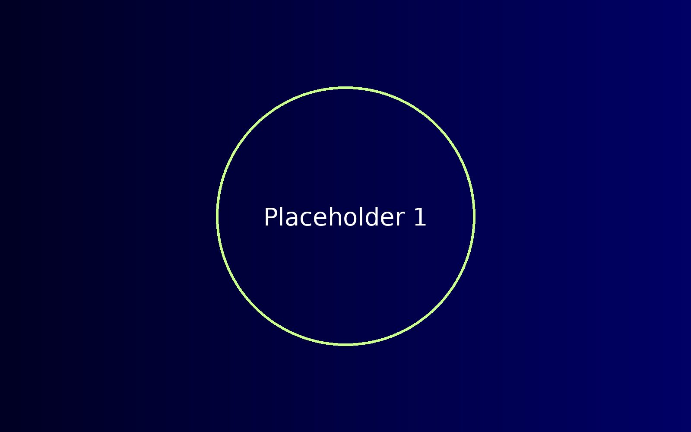
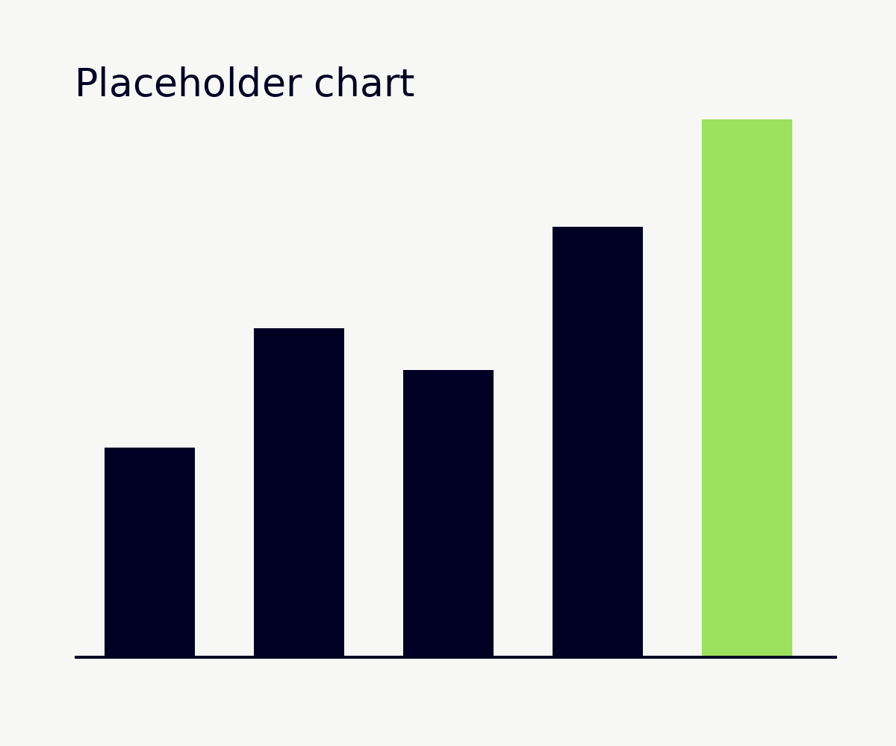

Step one
One point per card. Use lime to anchor the first item.

Short subtitle for the session
Circle background variant - text stays left

One message per slide. Keep it direct.
Dark-bg slides auto-apply a gradient overlay so white text is always legible.
One point per card. Use lime to anchor the first item.
White cards contrast well on dark backgrounds.
Off-white adds variety without breaking the palette.
Use dark cards sparingly to anchor the composition.
Define the context
Use this area for a concise option, category, or step
Name the priority
Keep the text aligned to the baked visual card panel
Check the evidence
Use short active phrasing so students can scan quickly
Choose the next move
Use white text on the dark baked card area only
List the choices
Use this card for the first part of a reusable framework
Show the tradeoff
Keep navy text on white and lime baked card areas
Make it concrete
Connect the category to a practical student action
Name the insight
Use the dark card for the strongest takeaway
Use for the widest-scope or longest-horizon decision
Each row can carry its own tag to mark scope or cadence
Progressive lime tint on rows 2 to 5 reinforces the narrowing
Optional closing band for a one-line takeaway
Optional closing band for a one-line takeaway
First question to answer
Second question to answer
Third question to answer
Fourth question to answer
Optional closing band, one approved look only

One line framing the overall arc of the objectives below
First objective, with a key phrase highlighted
Second objective, stated as an action the student performs
Third objective, kept to one clear sentence
Fourth objective, with a second key phrase
Fifth objective, parallel in grammar to the others
Sixth objective, closing on the decision the student can make
"A short attributed quotation flows around the portrait. Emphasise only the phrase that carries the argument."
- Attributed speaker

| Item | Weight | Description | Timing |
|---|---|---|---|
| First item | 15% | Short description of what this covers | Ongoing |
| Second item | 20% | Short description of what this covers | Week 7 |
| Third item | 30% | Short description of what this covers | Week 14 |
First condition: 8.0
Second condition: <= 3.5
What it isOne line saying what the tool actually is
Why we use itOne line saying what students use it for in this course


One closing line, with the pivotal words in lime
First step, with the verb in green
Second step, kept to one line
Third step, parallel in grammar
Fourth step, still one line
Fifth step, closing the sequence
One short closing statement
One line saying exactly what the students do
An optional prompt that unblocks the step
One line, with any constraint stated plainly
A second optional prompt
The pattern being broken, shown as a short chain
One line saying what the artefact is for
Use short pop-ups to explain optional context without crowding the slide
Suitability
Feasibility
How option A behaves on this dimension
One short line, no full stop
Keep rows parallel across both sides
Same order as the matching row on the right
Five rows is the tuned maximum
How option B behaves on this dimension
One short line, no full stop
Evidence-backed side takes the lime rail
Same order as the matching row on the left
Five rows is the tuned maximum
Sources: Reveal.js documentation; Author (year), short title
Click the pill top right. It spins for about two seconds, then shows a random group and student from groups.csv. The result stays until it is clicked again, or the slide changes. See instructions/group_picker.md.
The slide stands on its own; the image adds context on demand
State the takeaway so it works without the image
Each row checked on the tool's own page; the last row is the course default
Pick the tool after the workflow
Sources: Reveal.js; Tabler Icons; Python
Show the change on the left and prove it with a real run on the right
def greeting(name): return f"Hello, {name}!" print(greeting("alice")) # runs on every import
def greeting(name): """Return a greeting; empty names become "stranger".""" name = name.strip() or "stranger" return f"Hello, {name}!" if __name__ == "__main__": # only when run directly print(greeting("alice"))
# Before: importing runs top-level code $ python main.py Hello, alice! Hello, bob! # After: guard, then run from the root $ python -m src.main HELLO, BOB! $ pytest -q 6 passed
One closing line that the run on the right proves

Use the GitHub mark when no text label is requested
Use the dark mark on a light surface
Use the white mark on a dark surface